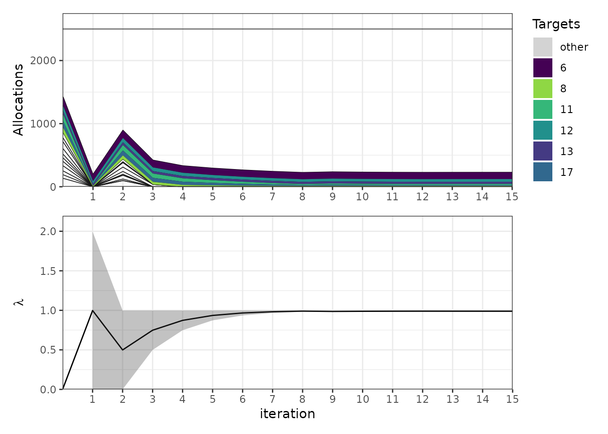

Validation against published newsvendor optima
Source:vignettes/zxh-newsvendor.Rmd
zxh-newsvendor.RmdAcknowledgment
This vignette adapts content from the original
alloscore package written by Aaron Gerding,
specifically from a
vignette that shows how to reproduce results from Zhang, Xu and Hua
(2009).
This vignette was drafted by Claude Code (Opus 5) and reviewed for accuracy by Nick Reich.
Why the newsvendor problem
The optimization inside [allocate()] is not specific to forecast evaluation. It solves a budget-constrained separable convex program, and one classical instance of that is the multiproduct newsboy problem with a budget constraint: choose stock levels for several products, under uncertain demand, subject to a limit on total purchasing cost.
That is useful here because the problem has a published literature
with reported optima. Zhang, Xu and Hua (2009) give two worked examples,
and this package ships their data in zxh_tab2 and
zxh_tab3. Reproducing their Opt column checks
allocate() against an external source rather than against
the package’s own history.
zxh_tab2
#> Product v h c mu sigma q_zxh GIM Opt
#> 1 1 7 1 4 102 51.0 85.75 0.00 0.00
#> 2 2 12 2 8 73 18.3 62.64 0.00 0.00
#> 3 3 30 4 19 123 30.8 108.90 0.00 0.00
#> 4 4 30 4 17 95 23.8 87.88 0.00 0.00
#> 5 5 40 2 23 62 15.5 58.26 0.00 0.00
#> 6 6 45 5 15 129 43.0 139.89 106.86 106.85
#> 7 7 16 1 10 69 34.5 55.98 0.00 0.00
#> 8 8 21 2 10 83 41.5 80.74 14.02 14.01
#> 9 9 42 3 40 120 30.0 68.96 0.00 0.00
#> 10 10 34 5 20 89 22.3 80.95 0.00 0.00
#> 11 11 20 3 10 115 38.3 108.71 15.58 15.65
#> 12 12 15 5 7 91 30.3 83.32 42.20 42.25
#> 13 13 10 3 4 52 17.3 50.33 34.56 34.60
#> 14 14 20 3 12 76 38.0 61.14 0.00 0.00
#> 15 15 47 2 33 66 16.5 56.66 0.00 0.00
#> 16 16 35 4 21 147 36.8 133.71 0.00 0.00
#> 17 17 22 1 11 104 34.7 102.11 15.23 15.13From newsvendor costs to gpl parameters
The newsvendor parameterization uses three costs per product:
c per unit purchased, v per unit of unmet
demand, and h per unit left over. The gpl loss instead uses
a scale kappa and a level alpha.
stdize_news_params() converts between them, giving
The alpha that falls out is the newsvendor’s familiar
critical ratio, and the unconstrained optimum is the
alpha-quantile of demand.
zxh_norm <- zxh_tab2 |>
mutate(stdize_news_params(ax = c, a_minus = v, a_plus = h), .after = c) |>
as_tibble()
zxh_norm |> select(Product, c, v, h, kappa, alpha, q_zxh)
#> # A tibble: 17 × 7
#> Product c v h kappa alpha q_zxh
#> <chr> <int> <int> <int> <dbl> <dbl> <dbl>
#> 1 1 4 7 1 8 0.375 85.8
#> 2 2 8 12 2 14 0.286 62.6
#> 3 3 19 30 4 34 0.324 109.
#> 4 4 17 30 4 34 0.382 87.9
#> 5 5 23 40 2 42 0.405 58.3
#> 6 6 15 45 5 50 0.6 140.
#> 7 7 10 16 1 17 0.353 56.0
#> 8 8 10 21 2 23 0.478 80.7
#> 9 9 40 42 3 45 0.0444 69.0
#> 10 10 20 34 5 39 0.359 81.0
#> 11 11 10 20 3 23 0.435 109.
#> 12 12 7 15 5 20 0.4 83.3
#> 13 13 4 10 3 13 0.462 50.3
#> 14 14 12 20 3 23 0.348 61.1
#> 15 15 33 47 2 49 0.286 56.7
#> 16 16 21 35 4 39 0.359 134.
#> 17 17 11 22 1 23 0.478 102.Building the demand distributions
Demand is Normal here, so add_pdqr_funs() builds the cdf
and quantile function from mean and sd
columns. Evaluating each quantile function at its own alpha
should recover the critical quantile that Zhang, Xu and Hua print in
q_zxh.
zxh_norm_forecasts <- zxh_norm |>
rename(mean = mu, sd = sigma) |>
add_pdqr_funs(dist = "norm", types = c("p", "q")) |>
mutate(q_ours = map2_dbl(Q, alpha, function(Q, alpha) Q(alpha)))
zxh_norm_forecasts |>
select(Product, alpha, q_zxh, q_ours) |>
mutate(difference = q_ours - q_zxh)
#> # A tibble: 17 × 5
#> Product alpha q_zxh q_ours difference
#> <chr> <dbl> <dbl> <dbl> <dbl>
#> 1 1 0.375 85.8 85.7 -0.000608
#> 2 2 0.286 62.6 62.6 0.00314
#> 3 3 0.324 109. 109. -0.00184
#> 4 4 0.382 87.9 87.9 -0.00350
#> 5 5 0.405 58.3 58.3 0.00387
#> 6 6 0.6 140. 140. 0.00393
#> 7 7 0.353 56.0 56.0 -0.0000221
#> 8 8 0.478 80.7 80.7 -0.00253
#> 9 9 0.0444 69.0 69.0 0.00135
#> 10 10 0.359 81.0 80.9 -0.00480
#> 11 11 0.435 109. 109. 0.000727
#> 12 12 0.4 83.3 83.3 0.00358
#> 13 13 0.462 50.3 50.3 -0.000464
#> 14 14 0.348 61.1 61.1 -0.00546
#> 15 15 0.286 56.7 56.7 0.00184
#> 16 16 0.359 134. 134. -0.00222
#> 17 17 0.478 102. 102. -0.00181Allocating under the budget
Zhang, Xu and Hua use a budget of 2500, with the unit cost
c as the weight in the constraint. Passing
w = "c" tells allocate() to take the weights
from that column, and target_names = "Product" names the
targets from another.
allo_norm <- allocate(
zxh_norm_forecasts,
w = "c",
K = 2500,
target_names = "Product"
)
comparison <- zxh_norm_forecasts |>
select(Product, c, GIM, Opt) |>
left_join(allo_norm$xdf[[1]], by = "Product") |>
select(Product, c, GIM, Opt, ours = x) |>
mutate(difference = ours - Opt)
comparison
#> # A tibble: 17 × 6
#> Product c GIM Opt ours difference
#> <chr> <int> <dbl> <dbl> <dbl> <dbl>
#> 1 1 4 0 0 0 0
#> 2 2 8 0 0 0 0
#> 3 3 19 0 0 0 0
#> 4 4 17 0 0 0 0
#> 5 5 23 0 0 0 0
#> 6 6 15 107. 107. 107. 0.00635
#> 7 7 10 0 0 0 0
#> 8 8 10 14.0 14.0 14.0 0.0113
#> 9 9 40 0 0 0 0
#> 10 10 20 0 0 0 0
#> 11 11 10 15.6 15.6 15.7 0.0573
#> 12 12 7 42.2 42.2 42.3 0.00483
#> 13 13 4 34.6 34.6 34.6 -0.00307
#> 14 14 12 0 0 0 0
#> 15 15 33 0 0 0 0
#> 16 16 21 0 0 0 0
#> 17 17 11 15.2 15.1 15.2 0.0547Two things to note. Only 6 of the 17 products are stocked at all, and they are exactly the 6 that Zhang, Xu and Hua stock — the budget binds hard enough that most products are shut out entirely, which is a useful test of the boundary handling. And the agreement is to within about a twentieth of a unit:
c(
max_abs_difference = max(abs(comparison$difference)),
budget_spent = sum(comparison$c * comparison$ours),
budget_available = 2500,
n_stocked_ours = sum(comparison$ours > 1e-8),
n_stocked_zxh = sum(comparison$Opt > 0)
)
#> max_abs_difference budget_spent budget_available n_stocked_ours
#> 5.733212e-02 2.501335e+03 2.500000e+03 6.000000e+00
#> n_stocked_zxh
#> 6.000000e+00The budget is spent to slightly over 2500. That is the
eps_K tolerance, 1% by default: the bisection stops once
the constraint is satisfied to within that relative tolerance rather
than exactly.
Comparing objective values
The comparison that really matters is not the allocation vector but
the value of the objective, since the problem can have near-flat optima.
exp_gpl_loss_fun() builds the expected loss for one
product, including the purchasing cost as an offset.
objective <- function(x) {
sum(pmap_dbl(
list(
zxh_norm_forecasts$F,
zxh_norm_forecasts$kappa,
zxh_norm_forecasts$alpha,
zxh_norm_forecasts$mean,
zxh_norm_forecasts$c,
x
),
function(F, kappa, alpha, mean, c, x) {
exp_gpl_loss_fun(F = F, kappa = kappa, alpha = alpha, offset = c * mean)(x)
}
))
}
c(
objective_at_zxh_opt = objective(comparison$Opt),
objective_at_ours = objective(comparison$ours),
objective_at_gim = objective(comparison$GIM)
)
#> objective_at_zxh_opt objective_at_ours objective_at_gim
#> 39825.18 39823.79 39825.04Our objective value is marginally lower than at the published
optimum, which is what the slight overspend buys. Both are below the
earlier Abdel-Malek and Montanari solution in the GIM
column.
The search
plot_iterations() shows the bisection on the shadow
price of the budget. With the default tolerances it takes 15 steps, the
last few of which barely move the allocation.
plot_iterations(allo_norm, num_targets_to_color = 6)
#> Warning: Removed 1 row containing missing values or values outside the scale range
#> (`geom_ribbon()`).
A bounded support
The second example uses Beta demand on
rather than the whole real line. add_pdqr_funs() handles
that with trans and trans_inv, which are
composed onto the cdf and the quantile function respectively.
zxh_beta_forecasts <- zxh_tab3 |>
mutate(stdize_news_params(ax = c, a_minus = v, a_plus = h), .after = c) |>
as_tibble() |>
rename(shape1 = Balpha, shape2 = Bbeta) |>
add_pdqr_funs(
types = c("p", "q"),
dist = "beta",
trans = function(x, x_min, x_max) (x - x_min) / (x_max - x_min),
trans_inv = function(q, x_min, x_max) x_min + (x_max - x_min) * q
)
allo_beta <- allocate(
zxh_beta_forecasts,
w = "c",
K = 6500,
target_names = "Product"
)
zxh_beta_forecasts |>
select(Product, c, x_min, x_max, GIM, Opt) |>
left_join(allo_beta$xdf[[1]], by = "Product") |>
select(Product, c, x_min, x_max, GIM, Opt, ours = x) |>
mutate(difference = ours - Opt)
#> # A tibble: 6 × 8
#> Product c x_min x_max GIM Opt ours difference
#> <chr> <int> <int> <int> <dbl> <dbl> <dbl> <dbl>
#> 1 1 4 100 300 207. 208. 208. -0.00292
#> 2 2 7 50 250 95.7 96.7 96.7 -0.00487
#> 3 3 15 75 150 90.1 90.3 90.3 -0.000617
#> 4 4 10 50 200 100. 101. 101. -0.00145
#> 5 5 15 50 200 90.1 90.6 90.5 -0.000989
#> 6 6 6 73 275 209. 212. 212. -0.000238Every product is stocked here, and each allocation lands inside its own support.
beta_cmp <- zxh_beta_forecasts |>
select(Product, c, Opt, x_min, x_max) |>
left_join(allo_beta$xdf[[1]], by = "Product")
c(
max_abs_difference = max(abs(beta_cmp$x - beta_cmp$Opt)),
budget_spent = sum(beta_cmp$c * beta_cmp$x),
budget_available = 6500,
all_within_support = all(beta_cmp$x >= beta_cmp$x_min & beta_cmp$x <= beta_cmp$x_max)
)
#> max_abs_difference budget_spent budget_available all_within_support
#> 4.867953e-03 6.500034e+03 6.500000e+03 1.000000e+00Other parameterizations
Two more helpers convert application parameterizations into
kappa and alpha:
stdize_ou_params() takes explicit over- and
under-prediction costs, and stdize_met_params() takes the
cost-loss ratio used in the weather decision-analysis literature.
rbind(
newsvendor = stdize_news_params(ax = 4, a_minus = 7, a_plus = 1),
over_under = stdize_ou_params(O = 1, U = 3),
cost_loss = stdize_met_params(C = 2, L = 10)
)
#> kappa alpha
#> newsvendor 8 0.375
#> over_under 4 0.750
#> cost_loss 10 0.800References
B. Zhang, X. Xu, and Z. Hua. “A binary solution method for the multiproduct newsboy problem with budget constraint.” International Journal of Production Economics, 117(1):136-141, 2009.
L. Abdel-Malek and R. Montanari. “An analysis of the multi-product newsboy problem with a budget constraint.” International Journal of Production Economics, 97(3):296-307, 2005.